3.1 transport-layer services
overview
provide logical communication between app processes running on different hosts
transport protocols run in end systems
- send side: breaks app messages into segments, passes to network layer
- rcv side: reassembles segments into messages, passes to app layer
more than one transport protocol available to apps
- Internet: TCP and UDP
Transport vs. network layer
network layer: logical communication between hosts
transport layer: logical communication between processes
relies on, enhances, network layer services
Internet transport-layer protocols
reliable, in-order delivery (TCP)
- congestion control
- flow control
- connection setup
unreliable, unordered delivery: UDP
- no-frills extension of “best-effort” IP
services not available:
- delay guarantees
- bandwidth guarantees
3.2 multiplexing and demultiplexing
overview
multiplexing at sender: handle data from multiple
sockets, add transport header (later used for demultiplexing)
demultiplexing at receiver: use header info to deliver
received segments to correct socket
demultiplexing
How demultiplexing works
host receives IP datagrams
- each datagram has source IP address, destination IP address
- each datagram carries one transport-layer segment
- each segment has source, destination port number
host uses IP addresses & port numbers to direct segment to appropriate socket
Connectionless demultiplexing
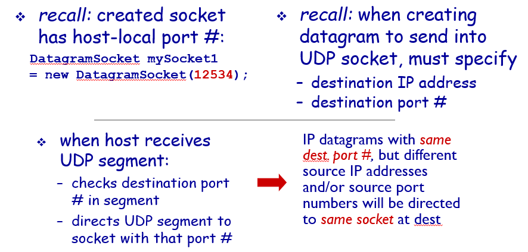
Connection-oriented demux
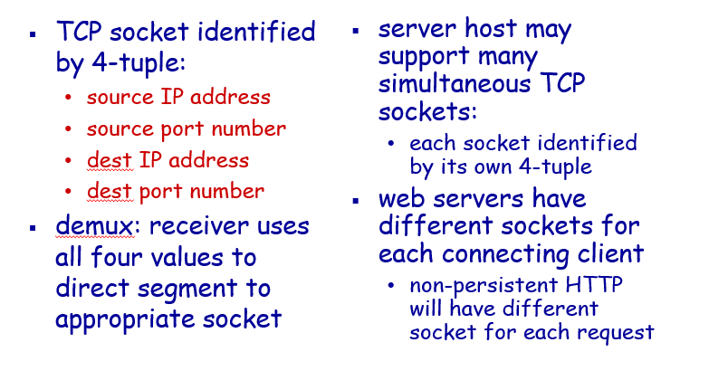
3.3 connectionless transport: UDP
UDP: User Datagram Protocol
“no frills,” “bare bones” Internet transport protocol
“best effort” service, UDP segments may be:
- lost
- delivered out-of-order to app
connectionless:
- no handshaking between UDP sender, receiver
- each UDP segment handled independently of others
UDP use:
- streaming multimedia apps (loss tolerant, rate sensitive)
- DNS
- SNMP
reliable transfer over UDP:
- add reliability at application layer
- application-specific error recovery!
UDP: segment header
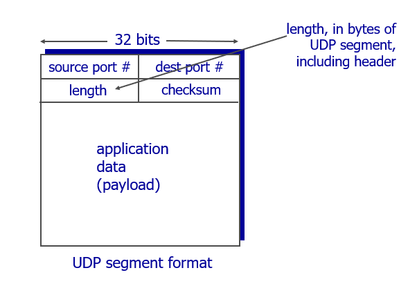
why is there a UDP?
- no connection establishment (which can add delay)
- simple: no connection state at sender, receiver
- small header size
- no congestion control: UDP can blast away as fast as desired
UDP checksum
Goal: detect “errors” (e.g., flipped bits) in transmitted segment
sender:
- treat segment contents, including header fields, as sequence of 16-bit integers
- checksum: addition (one’s complement sum) of segment contents
- sender puts checksum value into UDP checksum field
receiver:
- compute checksum of received segment
- check if computed checksum equals checksum field value:
- NO - error detected
- YES - no error detected. But maybe errors nonetheless? More later ….

3.4 principles of reliable data transfer
rdt
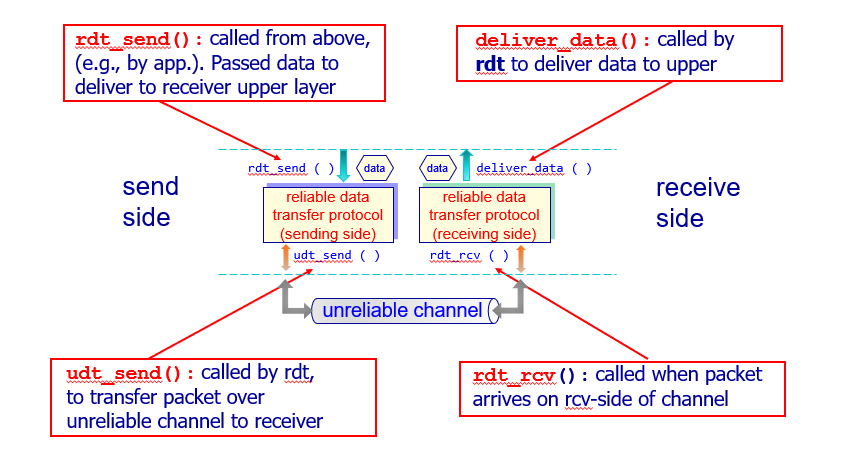
rdt1.0: reliable transfer over a reliable channel
underlying channel perfectly reliable
- no bit errors
- no loss of packets
separate FSMs for sender, receiver:
- sender sends data into underlying channel
- receiver reads data from underlying channel

rdt2.0: channel with bit errors
underlying channel may flip bits in packet
- checksum to detect bit errors
the question: how to recover from errors:
- acknowledgements (ACKs): receiver explicitly tells sender that pkt received OK
- negative acknowledgements (NAKs): receiver explicitly tells sender that pkt had errors
- sender retransmits pkt on receipt of NAK
new mechanisms in rdt2.0 (beyond rdt1.0):
- error detection
- receiver feedback: control msgs (ACK,NAK) rcvr->sender

rdt2.1


rdt2.2: a NAK-free protocol
same functionality as rdt2.1, using ACKs only
instead of NAK, receiver sends ACK for last pkt received OK
- receiver must explicitly include seq # of pkt being ACKed
duplicate ACK at sender results in same action as NAK: retransmit current pkt

rdt3.0: channels with errors and loss
approach: sender waits “reasonable” amount of time for ACK
- retransmits if no ACK received in this time
- if pkt (or ACK) just delayed (not lost):
- retransmission will be duplicate, but seq. #’s already handles this
- receiver must specify seq # of pkt being ACKed
- requires countdown timer


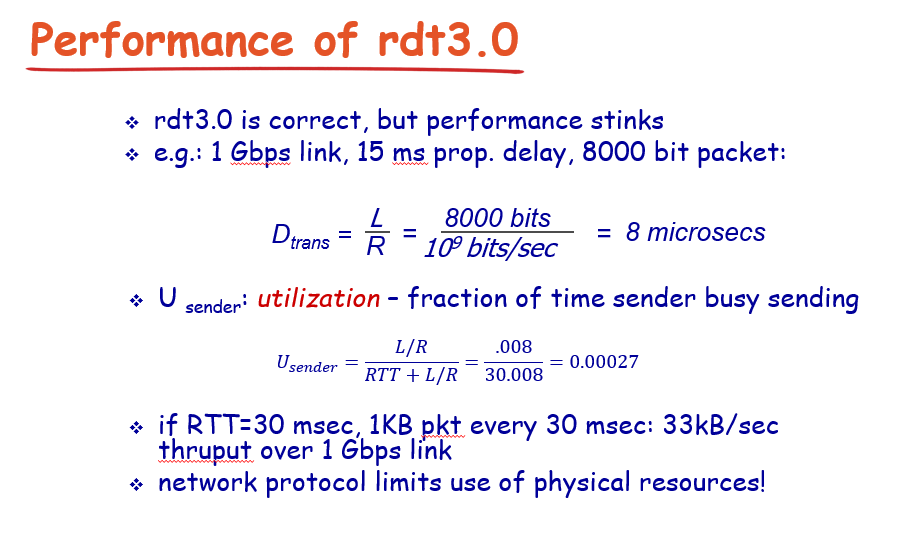
Pipelined protocols
pipelining: sender allows multiple, “in-flight”, yet-to-be-acknowledged pkts
- range of sequence numbers must be increased
- buffering at sender and/or receiver
Go-Back-N
sender can have up to N unacked packets in pipeline
receiver only sends cumulative ack
- doesn’t ack packet if there’s a gap
sender has timer for oldest unacked packet
- when timer expires, retransmit all unacked packets

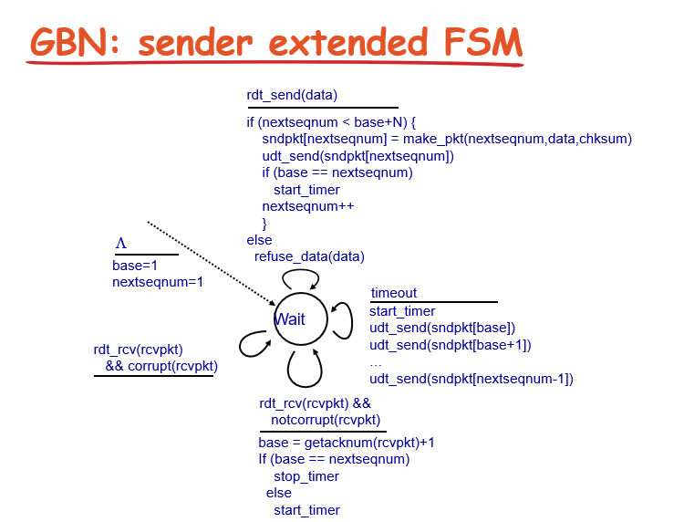
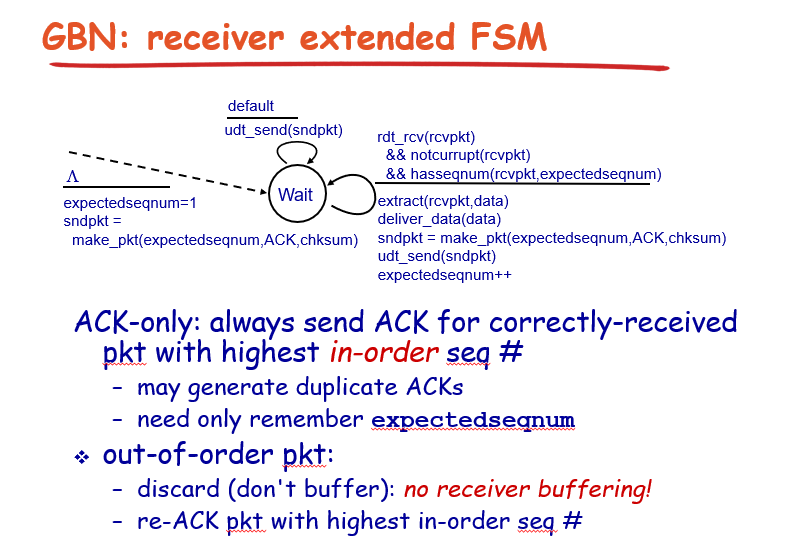
Selective repeat
receiver individually acknowledges all correctly received pkts
buffers pkts, as needed, for eventual in-order delivery to upp- er layer
sender only resends pkts for which ACK not received
- sender timer for each unACKed pkt
sender window
- N consecutive seq #’s
- limits seq #s of sent, unACKed pkts


3.5 connection-oriented transport: TCP
overview
point-to-point:
- one sender, one receiver
reliable, in-order byte steam:
- no “message boundaries“
pipelined:
- TCP congestion and flow control set window size
full duplex data:
- bi-directional data flow in same connection
- MSS: maximum segment size
connection-oriented:
- handshaking (exchange of control msgs) inits sender, receiver state before data exchange
flow controlled:
- sender will not overwhelm receiver
segment structure
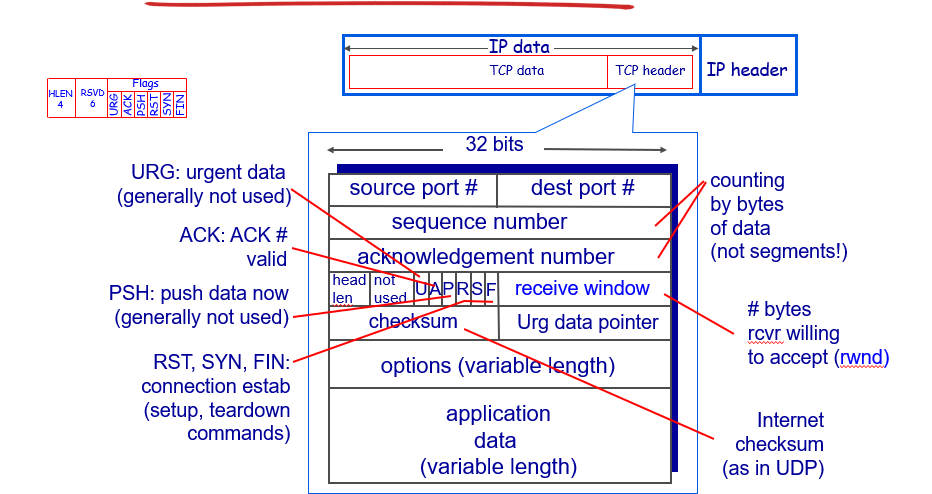
3-Way Handshake
TCP requires connection establishment before data transfer begins.
For a connection to be established or initialized, the two hosts must synchronize their Initial Sequence Numbers (ISNs).
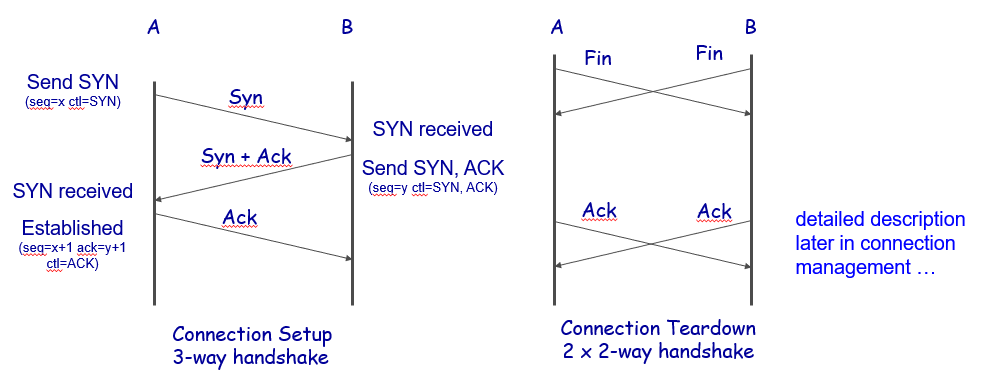
- Step 1 (SYN) : In the first step, client wants to establish a connection with server, so it sends a segment with SYN(Synchronize Sequence Number) which informs server that client is likely to start communication and with what sequence number it starts segments with
- Step 2 (SYN + ACK): Server responds to the client request with SYN-ACK signal bits set. Acknowledgement(ACK) signifies the response of segment it received and SYN signifies with what sequence number it is likely to start the segments with
- Step 3 (ACK) : In the final part client acknowledges the response of server and they both establish a reliable connection with which they will start an actual data transfer
TCP seq. numbers, ACKs
sequence numbers:
- byte stream “number” of first byte in segment’s data
acknowledgements:
- seq # of next byte expected from other side
- cumulative ACK
TCP round trip time, timeout

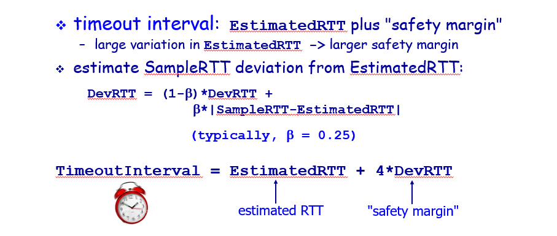
reliable data transfer
TCP creates rdt service on top of IP’s unreliable service
- pipelined segments
- cumulative acks
- single retransmission timer
retransmissions triggered by:
- timeout events
- duplicate acks
TCP sender events:
data rcvd from app:
- create segment with seq #
- seq # is byte-stream number of first data byte in segment
- start timer if not already running
- think of timer as for oldest unacked segment
- expiration interval: TimeOutInterval
timeout:
- retransmit segment that caused timeout
- restart timer
ack rcvd:
- if ack acknowledges previously unacked segments
- update what is known to be ACKe
- start timer if there are still unacked segments
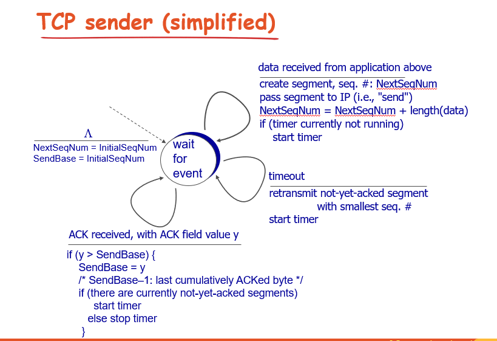
TCP fast retransmit
time-out period often relatively long:
- long delay before resending lost packet
detect lost segments via duplicate ACKs.
- sender often sends many segments back-to-back
- if segment is lost, there will likely be many duplicate ACKs.
if sender receives 3 ACKs for same data
(“triple duplicate resend unacked segment with smallest seq #
- likely that unacked segment lost, so don’t wait for timeout
flow control
receiver controls sender, so sender won’t overflow receiver’s buffer by transmitting too much, too fast
receiver “advertises” free buffer space by including rwnd value in TCP header of receiver-to-sender segments
- RcvBuffer size set via socket options (typical default is 4096 bytes)
- many operating systems autoadjust RcvBuffer
sender limits amount of unacked (“in-flight”) data to receiver’s rwnd value
guarantees receive buffer will not overflow
connection management
before exchanging data, sender/receiver “handshake”:
- agree to establish connection (each knowing the other willing to establish connection)
- agree on connection parameters
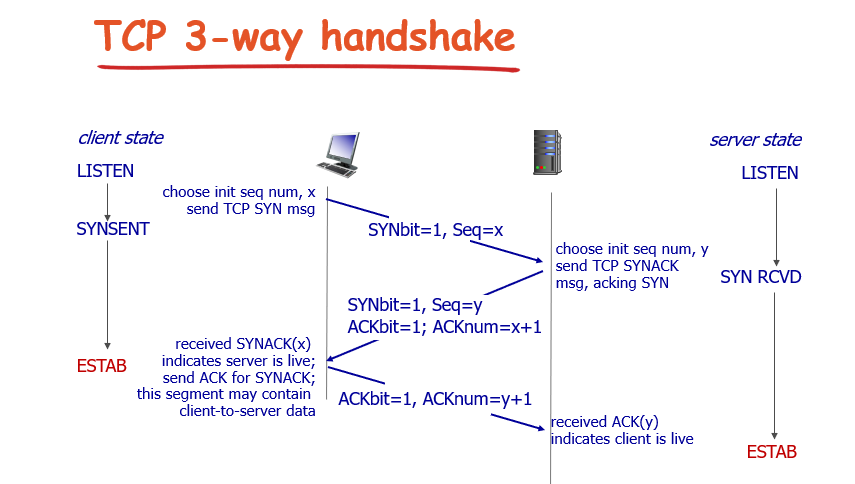
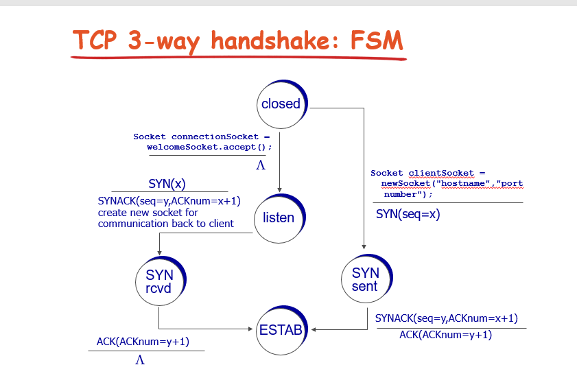
TCP: closing a connection
- client, server each close their side of connection
- send TCP segment with FIN bit = 1
- respond to received FIN with ACK
- on receiving FIN, ACK can be combined with own FIN
- simultaneous FIN exchanges can be handled
3.6 principles of congestion control
congestion
informally: “too many sources sending too much data too fast for network to handle”
different from flow control!
manifestations:
- lost packets (buffer overflow at routers)
- long delays (queueing in router buffers)
“costs” of congestion
- more work (retrans) for given “goodput”
- unneeded retransmissions: link carries multiple copies of pkt
- decreasing goodput
- when packet dropped, any “upstream transmission capacity used for that packet was wasted!
3.7 TCP congestion control
approach
sender increases transmission rate (window size), probing for usable bandwidth, until loss occurs
- additive increase: increase cwnd by 1 MSS every RTT until loss detected
- multiplicative decrease: cut cwnd in half after loss
TCP Slow Start
when connection begins, increase rate exponentially until first loss event:
- initially cwnd = 1 MSS
- double cwnd every RTT
- done by incrementing cwnd for every ACK received
summary: initial rate is slow but ramps up exponentially fast
detecting, reacting to loss
loss indicated by timeout:
- cwnd set to 1 MSS;
- window then grows exponentially (as in slow start) to threshold, then grows linearly
loss indicated by 3 duplicate ACKs: TCP RENO
- dup ACKs indicate network capable of delivering some segments
- cwnd is cut in half window then grows linearly
TCP Tahoe always sets cwnd to 1 (timeout or 3 duplicate acks)
最后更新： 2021年07月15日 03:26